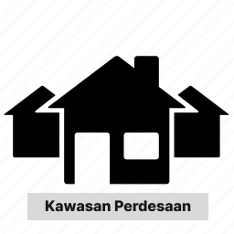
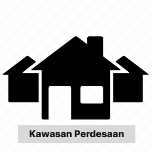
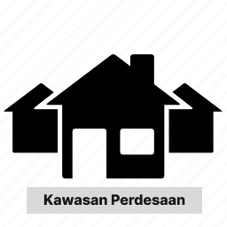
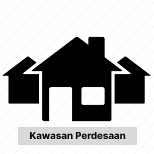

Selamat Datang
Website Seksi KED
Fokus Pengembangan Seksi KED

 



Selamat datang di Website Seksi KED Dinas Pemberdayaan Masyarakat dan Desa Kabupaten Bogor. Kami berharap dengan hadirnya website ini dapat menunjang keselarasan program kerja Seksi Kewilayahan Ekonomi Desa. Selain itu website ini juga merupakan wujud dari transparansi